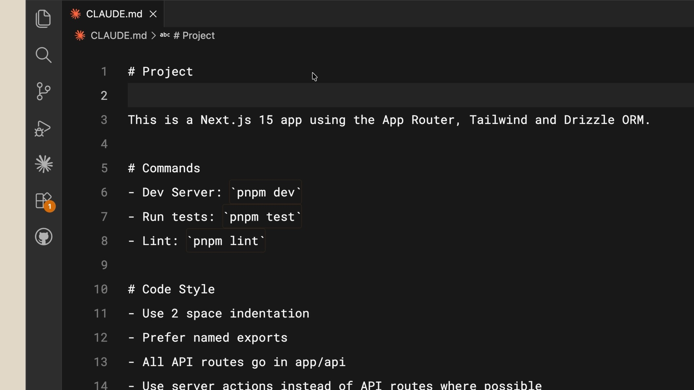
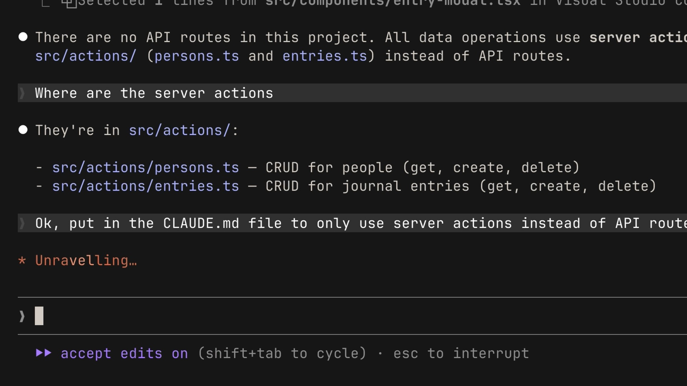

Файл CLAUDE.md
Чему научитесь
Видео 3:01 и текст урока
К концу урока вы сможете:
- объяснить, зачем нужен файл
CLAUDE.mdи когда Claude Code его читает; - составить
CLAUDE.mdсо стеком проекта, командами и правилами стиля кода; - отличать
CLAUDE.mdуровня проекта отCLAUDE.mdуровня пользователя; - получать первый вариант файла командой
/initи пополнять его поправками и ссылками на документы через@.
Видео и текст урока.
Одна из самых полезных возможностей Claude Code — файл CLAUDE.md. Он даёт Claude Code постоянную память о вашем проекте.
Какую проблему он решает
Если открыть Claude Code без файла CLAUDE.md, он каждый раз начинает с нуля. Ему приходится заново изучать кодовую базу, выяснять, какие нужны зависимости, и разбираться, какие функции уже реализованы. Иногда он строит догадки, и тогда направить Claude в нужную сторону становится труднее.
CLAUDE.md решает эту проблему. Это Markdown-файл, который вы кладёте в корень проекта, а Claude Code автоматически читает его в начале каждой сессии. Считайте его вводным инструктажем по вашей кодовой базе. Содержимое файла CLAUDE.md добавляется к вашему промпту.
Пример
Вот как выглядит типичный файл CLAUDE.md:
# Project This is a Next.js 15 app using the App Router, Tailwind, and Drizzle ORM. # Commands - Dev server: `pnpm dev` - Run tests: `pnpm test` - Lint: `pnpm lint` # Code Style - Use 2-space indentation - Prefer named exports - All API routes go in app/api/ - Use server actions instead of API routes where possible
Всё просто. Теперь, если попросить Claude Code создать React-компонент, он уже знает, что стили пишутся на Tailwind и что нужно следовать вашим соглашениям о коде.

CLAUDE.md из примера в VS Code: проект, команды и стиль кода.CLAUDE.md — для всей команды
CLAUDE.md можно (и нужно) закоммитить в систему контроля версий, чтобы им пользовалась вся команда. Вообще файлов памяти несколько, и они выстроены в иерархию в зависимости от того, для кого предназначены:
CLAUDE.mdуровня проекта лежит в корневом каталоге проекта. Он общий для всей команды.CLAUDE.mdуровня пользователя лежит в вашей папке конфигурации. Он только для вас и действует во всех ваших проектах. Сюда записывайте личные предпочтения.
Советы
Сохраняйте поправки в памяти. Если вы раз за разом поправляете Claude — например, напоминаете, что всегда нужно использовать server actions, а не API routes, — прямо попросите Claude сохранить это правило в памяти. В следующий раз, когда вы откроете проект, он будет его знать.

CLAUDE.md правило: только server actions, без API routes.Ссылайтесь на документацию проекта. Если в проекте есть документация, к которой Claude должен обращаться, укажите путь к файлу через символ @:
## README.md Please read if you need more info: @README.md
Начинайте без него. Мы советуем начинать проект без файла CLAUDE.md, чтобы увидеть, где вам постоянно приходится поправлять модель. Так CLAUDE.md останется компактным и в нём будет только необходимое. Когда будете готовы, выполните /init, и Claude сгенерирует файл за вас.
Попробуйте сами
Возьмите проект без CLAUDE.md и выполните /init. Прочитайте, что написал Claude, и удалите все строки, о которых вы не стали бы и говорить новому коллеге. Добавьте одну поправку, которую вам приходится повторять, затем начните новую сессию и попросите сделать что-нибудь, к чему эта поправка относится. Учёл ли её Claude?
Итог
Разница между раздражающей и продуктивной сессией Claude Code часто сводится к контексту, а файл CLAUDE.md — это способ его передать. Начните со стека, своих предпочтений и команд, а дальше дополняйте файл по ходу работы.
Дальше
Следующий урок — «Субагенты»: как Claude поручает части задачи субагентам, каждый из которых работает в собственном изолированном контекстном окне.
Оригинал урока: The CLAUDE.md file.